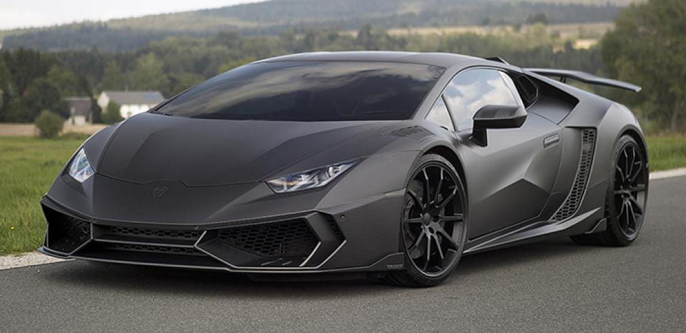
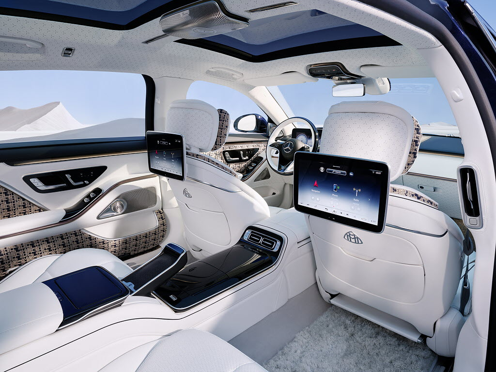

NSK Automobile est une entreprise française spécialisée dans la vente de voitures de luxe. Nous proposons des véhicules performants, garantis et accessibles.
Dans le cas où vous vous rendez dans l’un de nos magasins en France, un conseiller sera à votre disposition pour vous aider et vous accompagner dans les démarches administratives à effectuer et vous donnera tous les renseignements dont vous aurez besoin. Pour avoir plus d’informations, vous pouvez revenir à la page d’accueil.ci-dessous index.
NSK Automobile vous propose une réduction de 25 % sur les véhicules pour les clients ayant souscrit à notre assurance. Nous offrons également 15 % de réduction pour l’achat d’un deuxième véhicule chez NSK Automobile. Enfin, bénéficiez d’une réduction de 10 % sur tous nos Audi RS4.
Réduction de 20 % sur toutes nos Lamborghini Mansory du 20 février au 19 juin 2026

| Prix | |
|---|---|
| Puissance | |
| Vitesse maximum |
Les voitures de chez NSK Automobile possèdent plusieurs caractéristiques, à savoir :
Nous portons un grand intérêt au confort de nos véhicules pour nos clients.

NSK AUTOMOBILE vous remercie et vous attend.